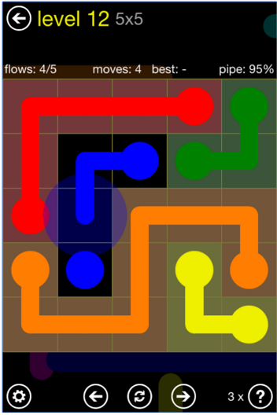
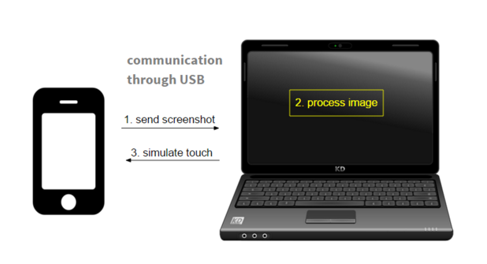

FreeFlow
Game Description
This is a single player game. The player has to connect the similar colors in such a way that path of two colors don't intersect.
Playstore Link: FlowFree

Difficulty level: Moderate
You can see a demo video of the working of this game at the following link: https://youtu.be/kfxZCnNZfTU
Overview
First, using image processing all the colors are recognized with their locations. Using backtrack algorithm game is solved and the touch is simulated appropriately using adb tool.
Requirements
- Computer with MATLAB, ADB Tool and required drivers set up.
- An Android Device with the this game installed on it. (Turn on the Developer options for better visualization)
- USB data transfer cable.
Block Diagram

Tutorial
Here's the step-wise tutorial to automate the game.
Step 1: Using ADB Tool to capture screenshot
The following command instantaneously takes the screenshot of the connected device and stores it in the SD card following the specified path.
system(' adb shell screencap -p /sdcard/screen.png ');
The following command pulls it from the SD card of the android device into the working system following the path specified.
system(' adb pull /sdcard/screen.png ');
The pulled image is stored in the form of a matrix of pixel values by the MATLAB.
Step 2: Image processing
Once the screenshot is obtained, we apply image processing on cropped image of screenshot (main part of game).
[centres, radii] = imfindcircles(crop_img, [rad_low rad_high], 'Sensitivity', 0.96);
If it is not detetcting the all cirlces then color thresholding is applied for that group of colors and each color is assigned a new id. For blank cell id is zero.
Further, this grid is converted into a string and passed as an argument to algorithm.
Step 3: Algorithm
The algorithm checks all the possible ways using back tracking and tries to solve it under given rules and solved matrix is returned. The code is written in c++. It takes command line string input and return string output of same length. Here's the code that is used in MATLAB for this purpose.
% s is input string.
cmd = 'flowfree.exe ';
[status,out] = system([cmd s]);
Step 4: Using ADB Tool to simulate touch
The following command swipes from the point(x1,y1) on the screen to the co-ordinates mentioned as (x2, y2) i.e. upto the first turn and then second swipe upto another turn this goes until it meets its color mate (as we can't swipe continuously). This is used to simulate touch at the appropriate points where we want to place the number.
% swiping from (x1,y1) to (x2,y2) on the grid
system(' adb shell input swipe x1 y1 x2 y2 100');
Conclusions
This way, the game flow free is automated. This code works well only till 10x10 blocks. For higher sizes, this implementation takes too much time.